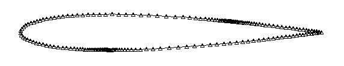
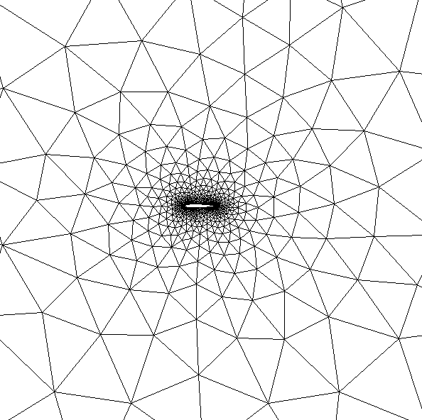
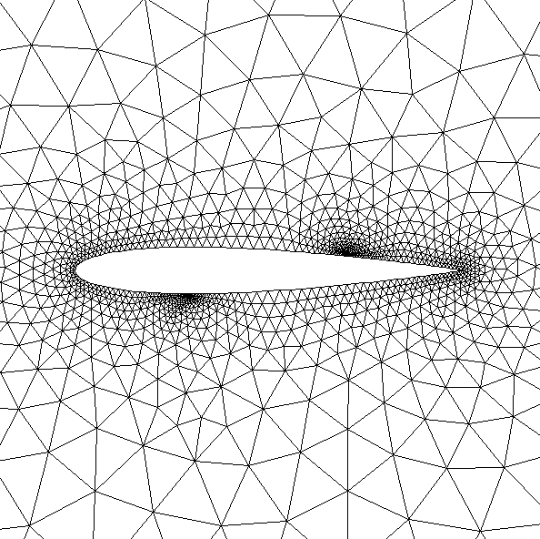
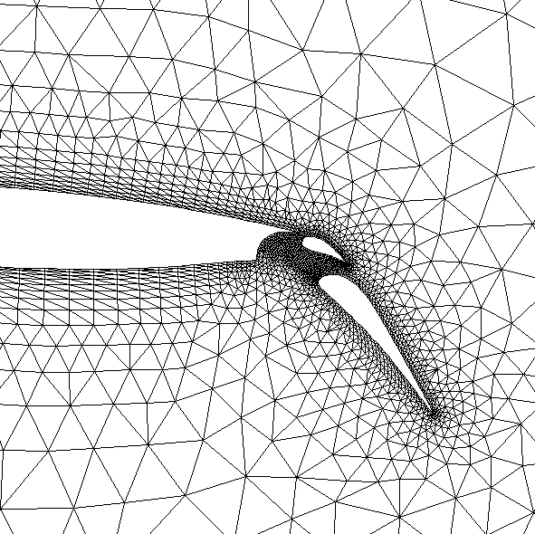

Grid Generation Tools
Unstructured grid generation can mesh any geometry. One of
the design criteria for the two tools presented on this page was minimum
user input, ie. the user should have as little information to specify
as possible. This has been acheived on two levels: the geometry is specified
by defining a curve analytically or discretely and by a few points with
grid spacing along the segments. The grid can then be created using just
these surface points.
Curve Discretization with ipol
Ipol allows to distribute points on analytic or discrete
curves by specifiying point distances at various locations along the curve.
A script language takes the curve parameters and program options. Input
and output of the discretized point chains on the curves are in a .pts
format as used by the triangular mesher.

Ipol allows to:
-
read any discretized geometry in a .pts format,
-
has a library of analytic shapes such as lines, circles,
arcs, polynomials, naca 4 digit airfoils, etc.,
-
scaling, rotation and translation transformations can be
applied to each segment of the geometry,
-
point density can be specified arbitrarily at any locations
alongthe surface,
-
global and local scaling factors can be applied to adjust
the mesh size,
-
the point distribution is smoothend by a Gauss-Seidel relaxation,
-
output is in a .pts format compatible with delaundo,
-
online help is available.
Ipol is in the public domain, the latest version 3.0 can
be obtained here.
Delaunay Triangulation with delaundo
Delaundo creates triangular grids based on the Frontal Delaunay
Method (Frod). First the set of discretized curves that describe the boundary
is triangulated. This initial mesh is suitable for interpolation of a local
mesh size throughout the domain after a few modifications in the connections
are made by the algorithm. New internal vertices are then created on frontal
edges between well-shaped and ill-shaped triangles such that a new triangle
with the desired size and a good shape will result.
Thus, the algorithm is similar to the various Delaunay
methods in that the resulting triangulation observes a circum-circle criterion.
It is also akin to Advancing Front methods in that new vertices are introduced
in layers on the boundaries in a very regular fashion. The regularity of
the point distribution and thus the element quality is enhanced by an averaging
process that tends to choose an equilibrium position between competing
edges when the front is refined or coarsenend.
Delaundo can produce stretched grids and has a multi-grid
capability that produces a serios of coarsened grid with nested nodes.
A few examples. A straightforward triangulation of the
simple NACA 0012 airfoil with the boundary points from above produces the
following grid:


Delaundo has also a rudimentary capability to create grids
with stretched layers for viscous calculations that works well for moderate
stretching factors of up to 100. Due to the simple implementation the stretched
layers must completely wrap around a simply connected body such as an airfoil
with a wake. It cannot do bump-like cases, where non-stretched boundaries
are attached to stretched ones. The following example shows the grid around
a three-element airfoil with a stretching of 1:10.

Literature on ipol and delaundo
-
J.-D. Müller, ``On Triangles and Flow'', PhD
Thesis, The University of Michigan, 1996.
-
J.-D. Müller, ``The Advancing Front Method and the
Delaunay Triangulation'', 24th von Karman Institute Lecture Series
on Computational Fluid Dynamics, 1994-02, 1994.
-
J.-D. Müller, ``Quality Estimates and Stretched Meshes
based on Delaunay Triangulations'', AIAA-Journal, Vol. 32, No. 12,
December 1994.
-
J.-D. Müller, ``Proven Angular Bounds and Stretched
Triangulations with the Frontal Delaunay Method'', AIAA-93-3347-CP,
1993.
-
J.-D. Müller, P.L. Roe and H. Deconinck, ``A Frontal
Approach for Internal Node Generation for Delaunay Triangulations'',
Int. J. of Num. Meth. in Fluids, Vol. 17, No. 3, pp 241-56, 1993.
-
J.-D. Müller, P.L. Roe and H. Deconinck, ``Delaunay-based
triangulations for the Navier-Stokes equations with minimum user input'',
Proceedings of the 13th International Conference on Numerical Modelling
in Fluid Dynamics, Rome, 1992.
-
J.-D. Müller, P.L. Roe and H. Deconinck, ``A Frontal
Approach for Node Generation in Delaunay Triangulations'', VKI Lecture
Series on Unstructured Grid Methods'', AGARD R-787, 1992.
Delaundo is in the public domain, the latest version 5.4
can be obtained here. The Phd thesis is also
available in A4 or US-letter
format (1.7M).
A visualisation program that can deal with delaundo's
preferred output format .dpl has been written by Darren DeZeeuw of the
University of Michigan. You can obtain a copy of the source here,
but you also need to get a copy of MIT's grafic,
developed mainly by J. Dannenhoffer.
Postprocessing of the grids produced by delaundo is done
with hip.
Ask questions
about ipol or delaundo, or return home.